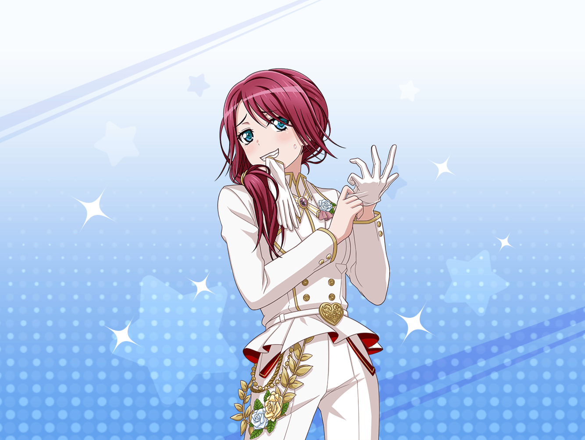

ショッピングモール
巴
ホワイトデーのお返しを探しに来てみたのはいいけど……
あんまりいい感じのものが見つからないな
巴
ひまりのアドバイスによれば、みんなに違うものを渡すよりは、
同じものの方がいいってことらしいけど……
巴
まさか、バレンタインに、あんなにいろんな女子から
チョコもらっちゃうなんてな。
……さすがに、瀬田先輩には負けるけど
巴
あこの同級生とかもいるから、
あんまり大人っぽいものもダメだろうし……
うーん、どういうのがいいんだろ
巴
Afterglowのメンバーにあげるのは、
すぐ思いつくんだけどな〜……
巴
とりあえず、全部のお店を回って……
薫
ああ……なんて情熱的で儚い赤色なんだ！
しかし、こちらの優雅なオレンジも美しく、儚い……！
巴
……あれ？
今の声、瀬田先輩か？
薫
フフ……このフリルのようなかわいらしい花びらも儚くて、
子猫ちゃん達にきっと似合うことだろうね！
巴
なんか、花屋の前で盛り上がってるけど……
何してるんだろ……？
巴
こんにちは、瀬田先輩
薫
おや、巴ちゃんじゃないか。
今日はここでショッピングかな？
巴
はい、少し探し物を……
瀬田先輩も買い物ですか？
薫
ああ、そうだよ。
バレンタインに、心のこもった贈り物をくれた
子猫ちゃん達へ、お返しをしようと思ってね！
巴
あれ？
お返しとして、ホワイトデーに
ミュージカルをやるんじゃないんですか？
薫
もちろん、その通りだよ！
私達の舞台も、素晴らしいプレゼントさ！
薫
……だけど、舞台は持って帰れないからね
薫
子猫ちゃん達には、舞台の思い出だけじゃなく、
何か形に残るものも、プレゼントしたいと思ったんだ
薫
ほら、見てごらん！ この儚いバラの花を！
この純白の花びらは、まるで子猫ちゃんの純粋な心のよう……
ああ……なんて儚い……！
薫
ここにあるような、儚く美しいバラを贈ったら、
きっと子猫ちゃん達は、喜んでくれる。
フフ、考えるだけで幸せな気持ちになるね
巴
……喜んでもらうために、か
巴
……あの、瀬田先輩。
ちょっと、相談してもいいですか？
薫
もちろん。なんでもどうぞ。
巴ちゃんの相談なら、いつでも受け付けるよ
巴
アタシもバレンタインに、同級生や後輩から
結構たくさんチョコもらったんです。
それで、どんなお返ししたらいいか、悩んでて……
巴
……ホワイトデーのお返しで悩むなんて、
女子としてはちょっと、複雑ですけど
薫
それだけ子猫ちゃんに、慕われているということさ。
悩むことなんてない、幸せなことだよ
巴
あはは……はい。気持ちは嬉しいです。
だから、喜んでもらえるものをプレゼントしたいんですけど……
薫
それなら花が１番だよ、巴ちゃん！
美しい花こそ、子猫ちゃんへの贈り物にふさわしいからね！
巴
は、花ですか……？
アタシが、花を……

巴
『やあ、子猫ちゃん。
君のために用意した素敵なバラを、
どうか受け取っておくれ……』
巴
……いやいや、ないない！
巴
せ、瀬田先輩！
なんか、花じゃないもので、他にいい感じの
プレゼントってないですかね！
薫
花以外で……？
それならお菓子はどうかな？
どんな子猫ちゃんも、甘いものには目がないからね
薫
よかったら、私のおすすめの店に
これから案内するよ
巴
本当ですか！
ありがとうございます、ぜひお願いします！